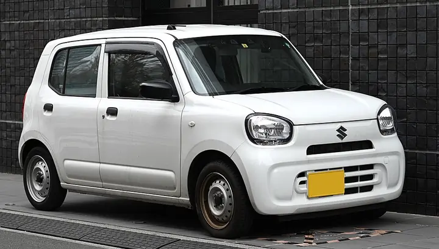
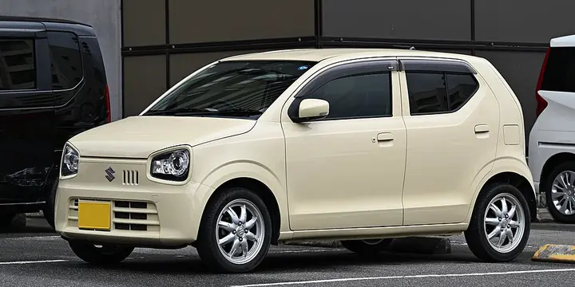
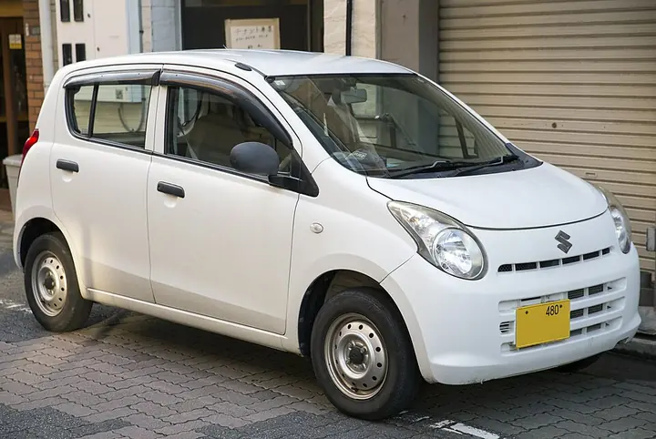
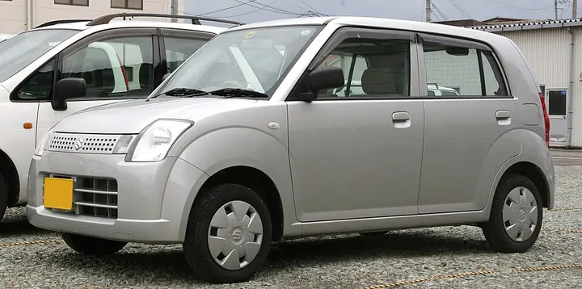
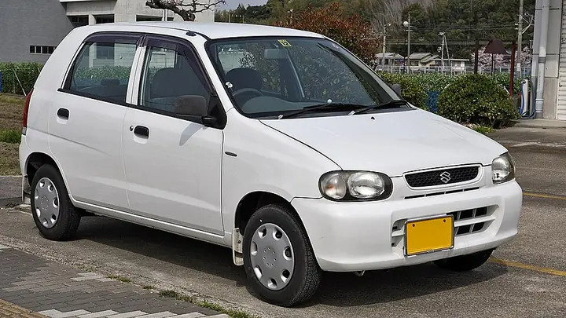
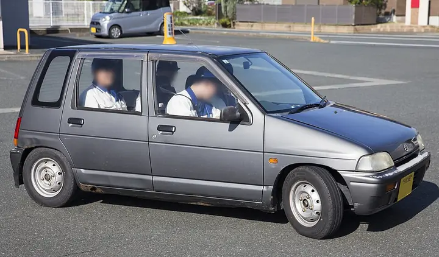
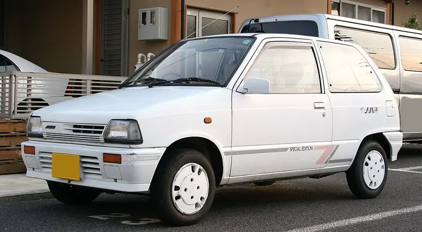
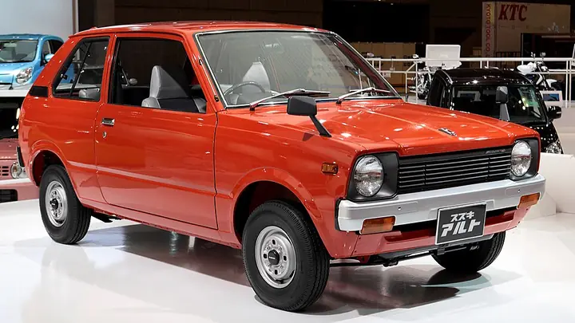

Suzuki Alto
Ninth generation (2021) · 2021–present
Abstract
This generation of the Suzuki Alto was built 2021–present in Japan: Kosai, Shizuoka. Body styles: 5-door hatchback. Layout: Front-engine, front-wheel-drive or four-wheel-drive. Designed by Alessandro Di Gregorio and Ayano Oshita.


1Specifications
| Production | 2021–present |
|---|---|
| Assembly | Japan: Kosai, Shizuoka |
| Designer | Alessandro Di Gregorio and Ayano Oshita |
| Body style | 5-door hatchback |
| Layout | Front-engine, front-wheel-drive or four-wheel-drive |
| Platform | HEARTECT platform |
| Engine | 657 cc R06D I3 (MHEV)658 cc R06A I3 |
| Electric motor | WA04C DC synchronous |
| Transmission | CVT |
| Battery | 3Ah Lithium Ion |
| Wheelbase | 2460 mm |
| Length | 3395 mm |
| Width | 1475 mm |
| Height | 1525 mm |
| Weight | 680–760 kg |
| Also called | Mazda Carol |
| Related | Suzuki Wagon R Smile |
2Previous generations



,_front_right2.jpg){kind=link}






_in_Dark_Silver_Metallic,_front_right.jpg){kind=link}




3Generation by generation
Length +6% from the first to the last
1979 19793,195 mm
1984 19843,195 mm
1988 19883,195 mm
1994 19943,295 mm
1998 19983,395 mm
2004 20043,395 mm
2014 20143,395 mm
2021 20213,395 mm
Weight +28% from the first to the last
1979 1979530 kg
1984 1984540 kg
1988 1988540 kg
1994 1994600 kg
1998 1998630 kg
2004 2004720 kg
2014 2014610 kg
2021 2021680 kg